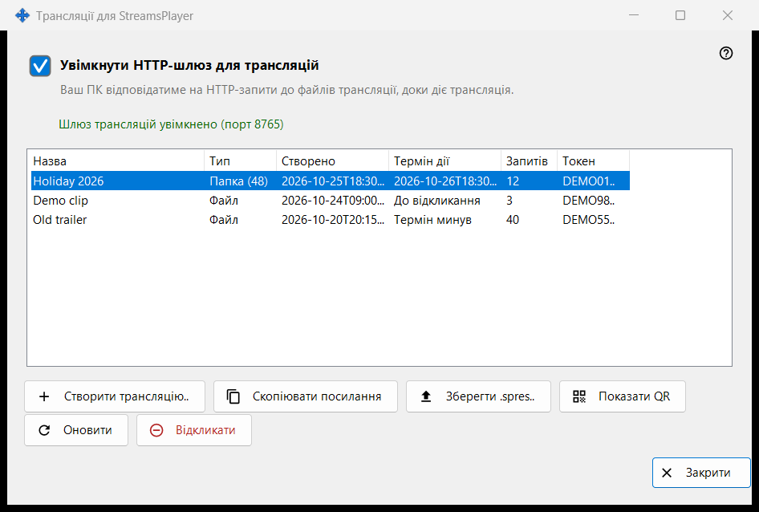
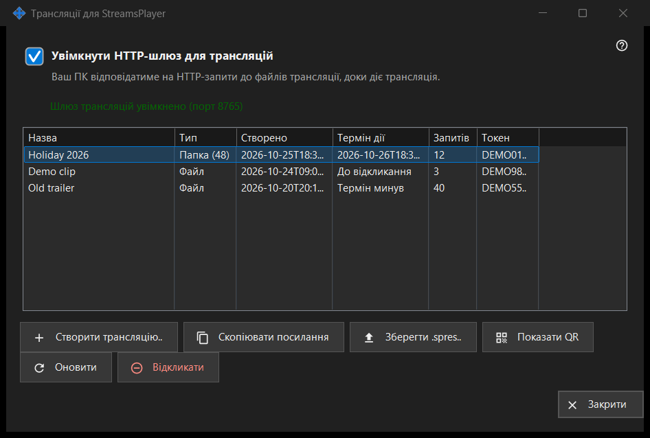

Трансляції для StreamsPlayer
Призначення
Керує HTTP-трансляціями медіафайлів і папок, які цей ПК пропонує застосунку StreamsPlayer. Вікно відкривається кнопкою або пунктом меню додавання «Трансляції..» у головному вікні Share Manager; вони з'являються лише тоді, коли служба роздачі повідомляє про підтримку трансляцій. Запуск зі шляхом до файла чи папки відкриває вікно й одразу показує діалог «Створити трансляцію» для цього шляху.


Порядок дій
- Увімкніть «Увімкнути HTTP-шлюз для трансляцій» або просто створіть трансляцію - шлюз увімкнеться сам.
- Натисніть «Створити трансляцію..», виберіть медіафайл, задайте назву, термін дії та варіант «Також через інтернет» і натисніть «Транслювати».
- Посилання копіюється в буфер обміну.
- Виберіть рядок і натисніть «Копіювати посилання», «Зберегти .spres..» або «Показати QR», щоб передати трансляцію на пристрій.
- Коли трансляція більше не потрібна, натисніть «Відкликати».
Елементи вікна
Перемикач шлюзу
Прапорець вмикає й вимикає HTTP-шлюз. Рядок під ним повідомляє «Шлюз трансляцій вимкнено» або «Шлюз трансляцій увімкнено (порт N)». Поки шлюз працює, цей ПК відповідає на HTTP-запити до файлів трансляцій. Якщо шлюз не запускається (порт, брандмауер), прапорець повертається до справжнього стану, а причина з'являється в одному червоному рядку під ним; відмова ніколи не відкриває діалог.
Список трансляцій
Колонки: Назва, Тип (Файл або Папка з кількістю елементів), Створено, Термін дії (дата, «До відкликання» або «Термін минув»), Запитів і Токен, де видно лише перші шість символів. Список оновлюється сам кожні 5 секунд. Подвійний клік по рядку копіює його посилання.
Створити трансляцію..
Запитує медіафайл і відкриває діалог «Створити трансляцію». Після підтвердження шлюз за потреби вмикається, трансляція створюється, а її посилання копіюється в буфер обміну з позначками конфіденційності; повідомлення підтверджує копіювання.
Оновити й Відкликати
«Оновити» доступне лише для трансляції папки й просить службу оновити її; повідомлення підтверджує результат. «Відкликати» працює з будь-яким рядком і спершу питає: «Відкликати трансляцію X? Посилання перестане працювати негайно.» Відкликану трансляцію відновити не можна - створіть нову.
Коли сторінку вимкнено
Якщо служба роздачі не відповідає або не підтримує трансляції, сторінка сама вимикається на місці, а червоний рядок пояснює причину: наприклад, ця версія служби трансляцій застаріла, або дію не вдалося виконати й подробиці записано в журнал.
Налаштування менеджера · Налаштування спільного доступу SFTP · Налаштування сервера обміну